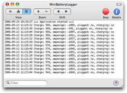

The Log View

The Log View shows the current log of all the power events concerning the battery.
Each line starts with a timestamp and contains informations about the event occurred.
The Log View shows just the messages of the current application run. The complete log is saved to disk and can be opened in the Console.
To narrow the visualization to events of interest, you can use the search field on the bottom.
To open the full log in the Console, use the toolbar button Open Log in Console or the omonymous menu item under the File menu.
To clear the log view, use the toolbar button Clear Log or the omonymous menu item under the Logging menu.